Wazuh SIEM home lab¶
This page is dedicated to the Wazuh home lab: the formal report of findings and analysis first, followed by an optional configuration section. There is also a separate informal learning write-up.
The aim of the task was to replicate the environment of a SOC Analyst: a working SIEM (Wazuh) with suspicious alerts getting triggered. To achieve this, I had to stand up and configure Wazuh from scratch (docs + AI-assisted). All alerts discussed in this write-up were triggered by me for learning purposes.
Formal report¶
The estate¶
| Host | Role | OS |
|---|---|---|
| Win11 desktop | Wazuh server (Docker/WSL2) + agent 001 | Windows 11 Home |
| Win10 desktop | agent 002 | Windows 10 Home |
| MacBook Air | agent 003 | macOS 15.6 |
Objective¶
Wazuh SIEM running on a Win11 host (Docker/WSL2), with three real endpoints enrolled (Win11, Win10, MacBook Air), alerts firing from deliberately generated behaviour (including with the help of Atomic Red Team), two custom detection rules I designed and debugged (AI‑assisted), and the NIST 800-53 and PCI DSS compliance dashboards captured as evidence (ISO 27001 mapped manually).
Detections fired¶
| # | Attack | MITRE | Rule (level) | Host | Detection type |
|---|---|---|---|---|---|
| 1 | EICAR malware (via Defender event channel) | Malware | 62123 (12) | Win11 | Built-in + config (wired the Defender channel) |
| 2 | Create-then-elevate backdoor account | T1136.001 / T1098 / T1078.003 | 100100 (8) + 100102 (14) | Win11 | Custom correlation rule (mine) |
| 3 | Brute-force logon failures | T1110 | 60122 (5) | Win10 | Built-in |
| 4 | Reverse shell (live C2, cross-machine) | T1059 / T1071 | 100200 (13) | macOS | Custom command-monitoring rule (mine) |
| 5 | Service-installation persistence (ART atomic) | T1543.003 | 61138 (5) | Win10 | Built-in, ATT&CK-validated |
| 6 | Clear event logs (anti-forensics) | T1070 | 63103 (5) | Win10 | Built-in, ATT&CK-validated |
Four security findings¶
- Docker silently bypasses the Windows Firewall - it writes an inbound allow rule scoped to both private and public, exposing every published port (indexer API, dashboard) without asking. Verified with
Get-NetFirewallRule. - AV/FIM blind spot - Defender blocked the Wazuh agent from opening the EICAR file to hash it, so FIM saw nothing at first. I fixed it by having the SIEM ingest the Defender event channel, after which the alert appeared.
- Default SIEM credentials (
admin/SecretPassword) - a critical misconfig (ISO 27001 A.5.17), documented as a scoped, accepted risk (LAN-only learning lab). This was not flagged by the SIEM itself. - Defender caught the attacker's toolkit - it flagged the Atomic Red Team
master.zipthree separate times during download and stripped out the log-clearing atomics. Defence-in-depth caught red-team tooling before it could run.
Detailed incident report¶
The following details each alert as it would be triaged in a production SOC: what fired, what the evidence shows, the assessment, the frameworks it touches, and the recommended response. Each alert was generated in a controlled test (the offensive steps are covered in the separate learning write-up); here they are treated as genuine.
Unwanted software (EICAR) - Win11¶
On July 11, at 21:01:30.302, a rule of level 12 (id 62123) triggered, flagging potentially unwanted software:
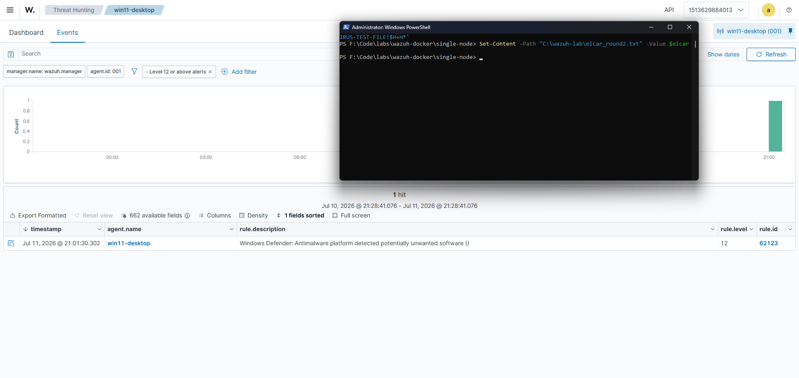
The investigation showed that an "EICAR" file was found on the machine:
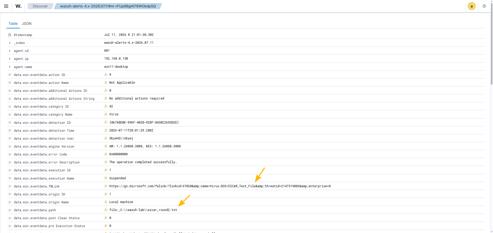
| Severity | High |
| Observation | Microsoft Defender detected the EICAR test file on the host and quarantined it. The alert reached Wazuh through the Windows Defender event channel. |
| Assessment | A confirmed malware signature on an endpoint. In production this could be the first sign of a broader compromise and warrants immediate triage. |
| MITRE ATT&CK | T1204 (User Execution) or T1105 (Ingress Tool Transfer), depending on how it was delivered. |
| Violates | ISO 27001 A.8.7 (protection against malware); NIST 800-53 SI-3 (malicious code protection). |
Recommended response
- Confirm the file was quarantined
- Isolate the host if the detection is genuine
- Run a full AV/EDR scan
- Establish how the file arrived (download, email, USB, lateral movement)
- Hash the file and check threat intelligence
- Sweep other hosts for the same indicator
- Reimage if compromise is confirmed
Preventive: maintain EDR/AV, email and web filtering, application allowlisting, and user-awareness training.
Compliance Dashboard
Estate-wide NIST 800-53 view for the period; the EICAR detection appears as the level-12 alert and under SI.3 (malicious code protection).
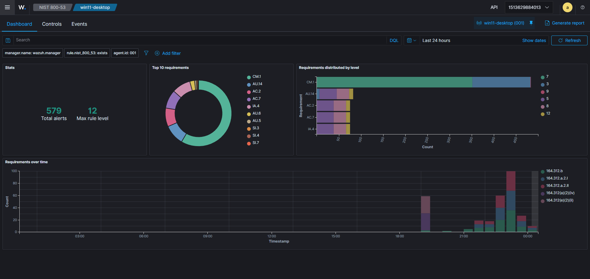
New admin account, backdoor pattern - Win11¶
On 12 July at 00:01:49.222 a new local account (bdtest3) was created (rule 100100). About 17 seconds later, at 00:02:06.925, the account was added to the local Administrators group, and my custom correlation rule fired at that same moment (rule 100102, level 14), flagging that a newly-created account had just been made an administrator. The elevation and the backdoor flag are the same event, so the sequence produces two alerts in total: the account creation, then the backdoor flag on the elevation. The events at 00:01:49.2xx ("Users Group Changed" and "Domain Users Group Changed") are part of the account creation (not the elevation).
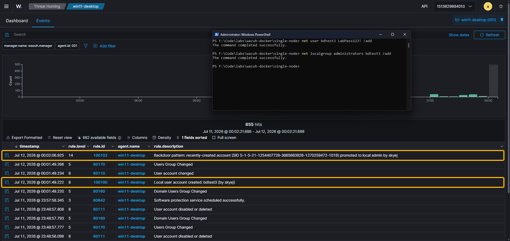
| Severity | Critical |
| Observation | A local account was created, then added to the local Administrators group by the same logon session within minutes: the create-then-elevate pattern. A custom correlation rule links the two events, whereas the built-in rules alert on each separately but do not connect them. |
| Assessment | A classic persistence and privilege-escalation sequence. Legitimate administration can look identical, so the priority is confirming whether it was authorised. If not, this is a live backdoor account. |
| MITRE ATT&CK | T1136.001 (Create Account: Local), T1098 (Account Manipulation), T1078.003 (Valid Accounts: Local Accounts). Tactics: Persistence, Privilege Escalation. |
| Violates | ISO 27001 A.5.16 (identity management), A.5.18 (access rights), A.8.2 (privileged access rights); NIST 800-53 AC-2 (account management), AC-6 (least privilege). |
Recommended response
- Verify whether the creation and elevation were authorised (change ticket or known task)
- If not, disable and remove the account immediately
- Investigate the account that performed the action for compromise, and rotate its credentials
- Audit for other unauthorised privileged-group changes
- Hunt for persistence and lateral movement
Preventive: least privilege, privileged-access management (PAM), an approval workflow for admin grants, and alerting on privileged-group changes (which this rule provides).
Compliance Dashboards
Compliance views for the period, showing the access-control and account-management activity from this incident (NIST 800-53 and PCI DSS).
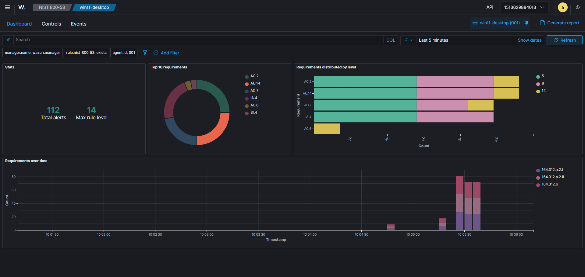
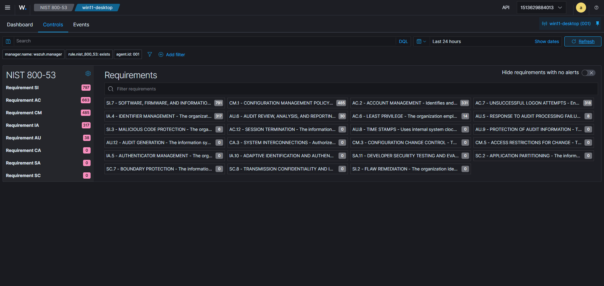
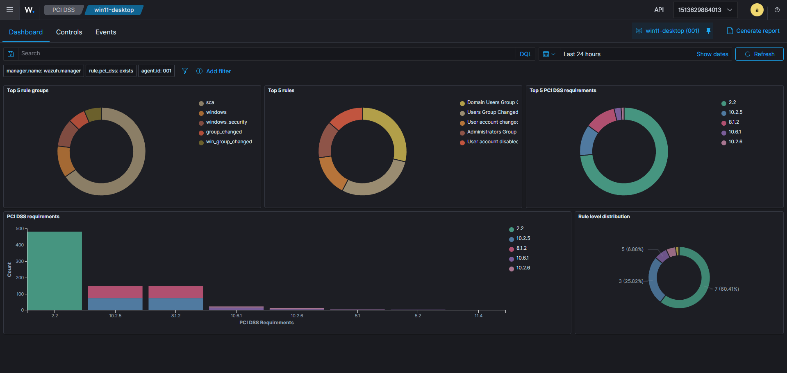
Repeated logon failures - Win10¶
On July 12, between 10:55:21.553 and 10:55:47.888, six alerts were triggered for a repeated incorrect password being entered.
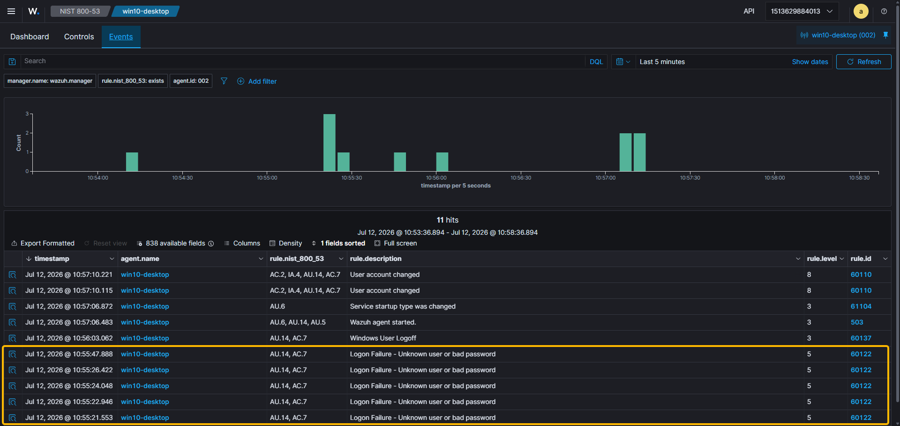
| Severity | Low to Medium (would escalate if a login succeeded) |
| Observation | Six failed logon attempts against one account in about 26 seconds. No successful logon followed. |
| Assessment | On its own this is low risk, but it would escalate sharply if a successful logon followed the failures (a possible successful brute force). The Windows login screen locked (rate-limited) during the attempts, which is a control working as intended. |
| MITRE ATT&CK | T1110 (Brute Force). |
| Violates | ISO 27001 A.8.5 (secure authentication); NIST 800-53 AC-7 (unsuccessful logon attempts). |
Recommended response
- Confirm the source (local console vs network/RDP)
- Check whether any attempt succeeded
- Verify the account is not compromised
- Confirm account-lockout and rate-limiting are enforced
- Consider MFA
Preventive: account-lockout policy, MFA, and monitoring for password spraying (a few attempts spread across many accounts).
Possible reverse shell - macOS¶
On July 12, at 17:16:41.708 an alert came through about a change of listened-ports status (a generic built-in netstat rule). Following this, at 17:34:46.069, a level 13 alert was triggered by my custom rule for a shell/tool holding an established outbound TCP connection.
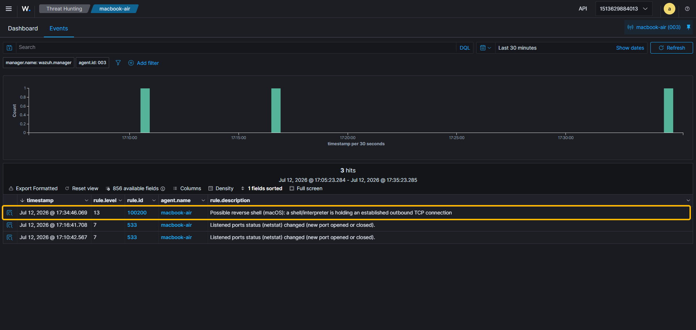
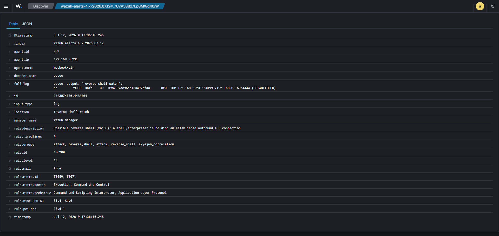
| Severity | Critical |
| Observation | The process nc (netcat) on the Mac was holding an established outbound TCP connection to 192.168.0.150:4444, the classic relay used by a reverse shell. A shell or a tool like netcat holding an outbound connection is a strong indicator, though not proof on its own (some tools hold connections legitimately), so it needs investigating. A custom command-monitoring rule caught it (macOS has no built-in for this); a generic netstat alert had noticed the connection first, but without identifying the process. |
| Assessment | If confirmed, this is active remote control of the host (a live reverse shell). Contain first, investigate second. |
| MITRE ATT&CK | T1059 (Command and Scripting Interpreter), T1071 (Application Layer Protocol / C2), T1571 (non-standard port). |
| Violates | ISO 27001 A.8.20 / A.8.21 (network security), A.8.16 (monitoring activities); NIST 800-53 SC-7 (boundary protection), SI-4 (system monitoring). |
Recommended response
- Isolate the host from the network immediately to cut the C2
- Capture volatile evidence (process tree,
lsof/netstat, memory) before killing the process if feasible - Terminate the shell process and its parent
- Identify and block the C2 endpoint
- Determine the initial access, and hunt for persistence and lateral movement
- Reimage
Preventive: egress/outbound filtering, EDR, application allowlisting, network segmentation.
Alert JSON (rule 100200)
1 2 3 4 5 6 7 8 9 10 11 12 | |
Service created, then logs cleared - Win10¶
On July 12, at 21:05:46.059 a new Windows service was created. At 21:12:21.638, the audit log was cleared.
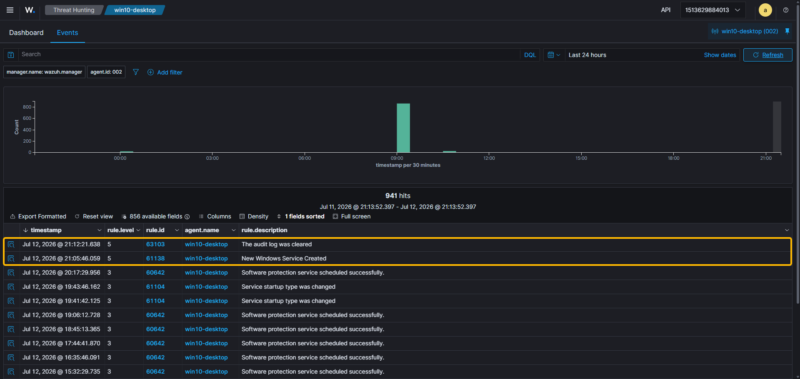
| Severity | High (as a pair) |
| Observation | A new auto-start Windows service was created, and about 7 minutes later the Security audit log was cleared: a persist-then-cover-tracks sequence. Log clearing is rarely legitimate and is a strong anti-forensic indicator. |
| Assessment | Each rule is only level 5 on its own, but the combination (establishing persistence, then destroying evidence) is what an analyst would escalate on. Because logs were forwarded to the SIEM, the log-clearing destroyed nothing: the off-host copy kept the full record. |
| MITRE ATT&CK | T1543.003 (Create/Modify System Process: Windows Service), T1070.001 (Indicator Removal: Clear Windows Event Logs). Tactics: Persistence, Privilege Escalation, Defense Evasion. |
| Violates | Service: ISO 27001 A.8.9 (configuration management), NIST 800-53 CM-7 (least functionality). Log clearing: ISO 27001 A.8.15 (logging), NIST 800-53 AU-9 (protection of audit information). |
Recommended response
- Investigate the new service (binary path and signature; is it legitimate?)
- Remove it if malicious
- Treat the log clearing as a strong sign of active intrusion
- Preserve remaining logs and rely on the SIEM's off-host copy
- Hunt for the actor, persistence, and lateral movement
Preventive: off-host log forwarding (already in place, which is why the clearing hid nothing), restricting service-install rights, and alerting on both service creation and log clearing.
Alert JSON (rules 61138 and 63103)
1 2 3 4 5 6 7 8 9 10 11 12 13 14 15 16 17 18 19 20 21 22 | |
Dashboard¶
I created a custom dashboard that brings every detection above into a single pane across all three hosts: a metric summary (detection types, hosts, top severity), a per-host breakdown, a detail table (attack, host, severity), and a timeline of activity. Having everything in one view makes it easier to spot activity across the estate and to summarise it for stakeholders:
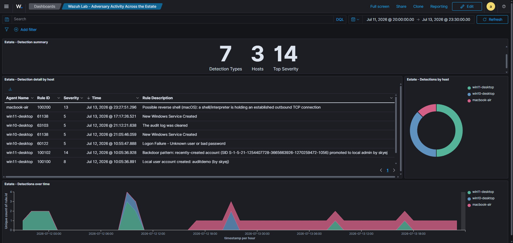
SIEM setup and configuration¶
A short overview of what was set up. The full step-by-step (Docker deployment, certificate generation, agent enrolment, rule authoring) lives in the separate learning write-up.
- Platform: Wazuh 4.14.5 single-node stack (manager, indexer and dashboard) running in Docker on a Windows 11 host (WSL2 backend).
- Estate: three native agents enrolled across three operating systems (Windows 11, Windows 10 and macOS), giving real multi-OS coverage on physical machines rather than everything running as virtual machines on one host.
- Detection engineering: two custom rules written in
local_rules.xml(AI-assisted): a Windows create-then-elevate backdoor correlation, and a macOS reverse-shell detector built on command monitoring. Both are mapped to MITRE ATT&CK and tagged so they show up in the compliance dashboards. - Log sources: beyond the defaults, I added the Windows Defender event channel (Win11) and a macOS command-monitoring watch, and enabled the relevant Windows audit policies (account management, logon).
- Compliance: the built-in NIST 800-53 and PCI DSS dashboards were captured as evidence (shown in the relevant incidents above), with ISO 27001 Annex A mapped manually (Wazuh has no native ISO 27001 dashboard). Full generated reports: NIST 800-53 (PDF), PCI DSS (PDF).
local_rules.xml (AI-assisted)
1 2 3 4 5 6 7 8 9 10 11 12 13 14 15 16 17 18 19 20 21 22 23 24 25 26 27 28 29 30 31 32 33 34 35 36 37 38 39 40 41 42 43 44 45 46 47 48 49 50 51 52 53 54 55 56 57 58 59 60 61 62 63 64 65 66 67 68 69 70 71 72 73 74 75 76 77 78 79 80 81 82 83 84 85 86 87 88 89 90 91 92 93 94 95 96 97 98 99 100 101 102 103 104 105 106 107 108 109 110 111 112 113 114 115 116 117 118 119 120 121 122 123 124 125 126 127 | |